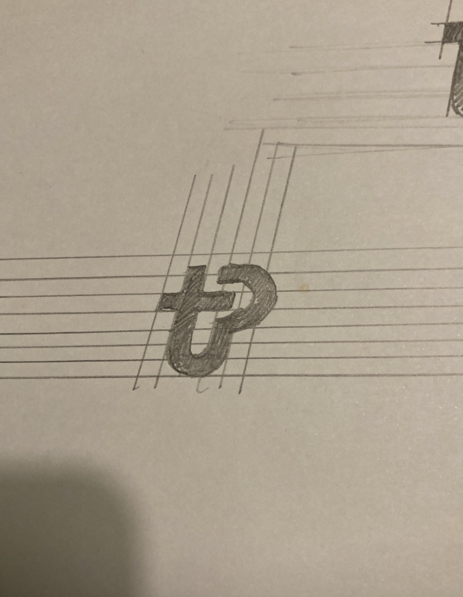
01 — Sketch
Hand on paper
First instinct: a single mark that could carry both fitness motion and the discipline of a coach.
Make expert guidance feel as immediate as sending a message. A mobile + web product that turns a coach's spare minutes into bookable, on-demand video consultations — designed end-to-end from 0 to 1.
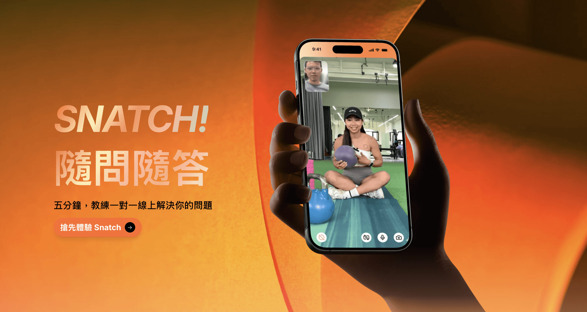
Coaching shouldn't have to wait for the next session.
Snatch is built on one belief — the distance between a question and an expert answer should be close to zero. Every decision, from the booking flow to the colour of a single button, works to compress that distance, turning a coach's idle minutes into something a student can book in a few taps.
The fitness market is shifting toward the creator economy — coaches build audiences on social, and students expect on-demand, short-form interaction. Yet booking still lived in DMs and scattered calendars.
Research surfaced two tensions worth designing for: coaches had unstable income and idle gaps between sessions; students had small, urgent questions that didn't justify booking a full hour. Snatch sits exactly in that gap.
The traditional model couldn't accommodate flexible time slots, nor address the quick micro-questions students had between sessions — leaving coaches' time and students' momentum on the table.
Snatch introduced flexible 5-, 10- and 15-minute video consultations — letting coaches monetize the gaps between sessions, while students get immediate, personalized guidance.
A warm, high-energy orange anchors the brand — momentum, encouragement, and the “now” of on-demand coaching. Soft neutral canvases keep the coach and the live video the hero, while each feature flow (視訊 · 預約 · 課程) carries its own pastel gradient within one warm family — distinct, but unmistakably Snatch.
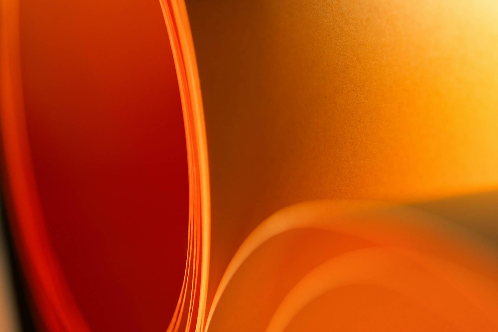
A palette built from a single emotional arc — warm-up, peak effort, and cool-down — so every flow in the product feels like part of one session.
Frosted gradient surfaces, soft depth and rounded cards give the interface a tactile, premium feel. The booking sheet layers translucency so available time-slots appear to float above the context behind them — turning an admin task into something that feels light and considered.
Translucent layer that lets brand colour bleed through, keeping content legible without flattening the surface.
Three-stop warm gradient with a top-right glint — used on key feature cards and onboarding moments.
Two-layer shadow keeps cards anchored at rest and feeling lifted on hover — never harsh, never floating.
An 8px spacing system, consistent corner radii, eased transitions and fully-specified button states (default → pressed → disabled → loading) form the finish. It's the layer most users never name — but it's why booking a 5-minute session feels effortless rather than fiddly.
The Snatch identity began on lined paper. From hand-sketched “tP” letterforms, the mark was rationalised onto a geometric grid of circles and guides — a system any product surface could repeat — and finally finished in the brand orange.

First instinct: a single mark that could carry both fitness motion and the discipline of a coach.
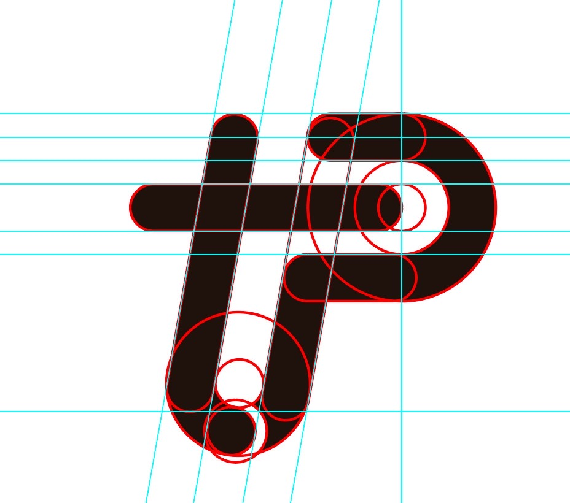
Rebuilt on a system of circles and baselines so every stroke and curvature is intentional and reproducible at any size.
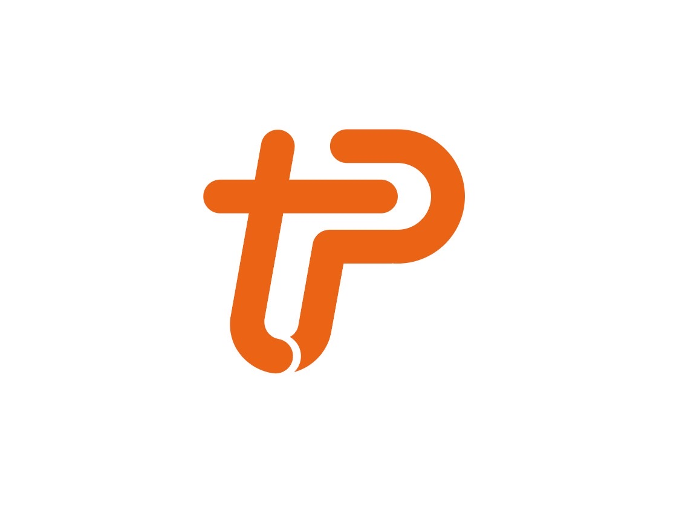
Resolved in Snatch Orange — energy, immediacy and the “now” of on-demand coaching, ready for app icon, UI and merch.
Messaging immediacy meets the creator economy — what if booking a coach felt as fast as sending a voice note?
Mapped coach income instability, fragmented scheduling, and the students' small-but-urgent questions through interviews and market scan.
A coach with 15 idle minutes between clients; a student with a form-check question after work — both served by the same flow.
Flexible 5/10/15-minute slots, a four-step conversational booking, and a token-based design system shared across app & web.
Tamed the complexity of flexible scheduling into four taps; built a scalable design system solo and kept every component “ready for dev”.
As sole designer I partnered with the founder/PM on product strategy and handed engineering dev-ready specs and states.
The booking flow began as a flat, utilitarian list. Drag the slider to see how the final design rebuilds the same screen as a layered, frosted surface — the same information, given material and finish.
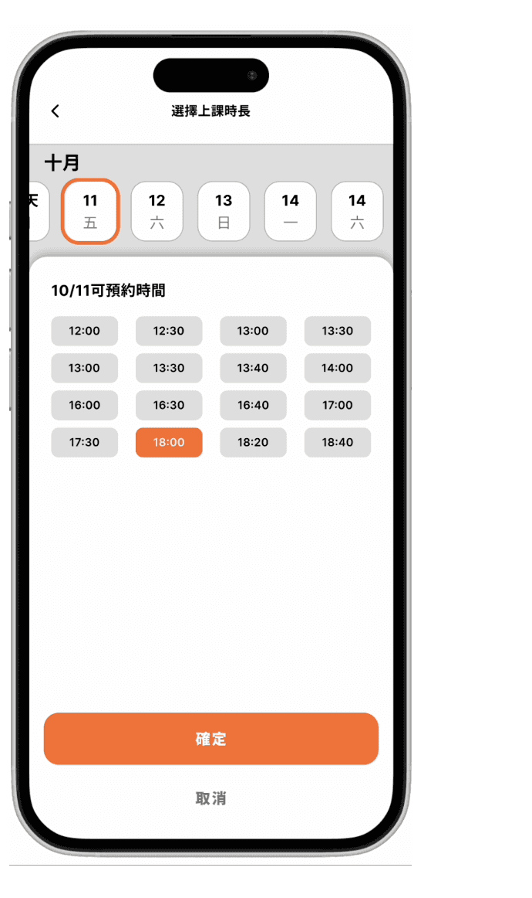
Drag the handle — or tap left/right of the divider — to compare. Placeholder wireframe shown on the left; swap-in slot for real legacy screenshot when available.
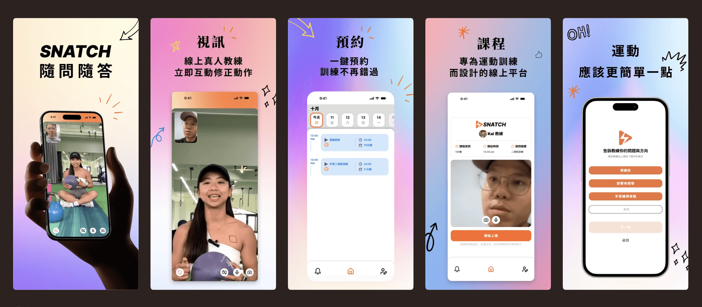
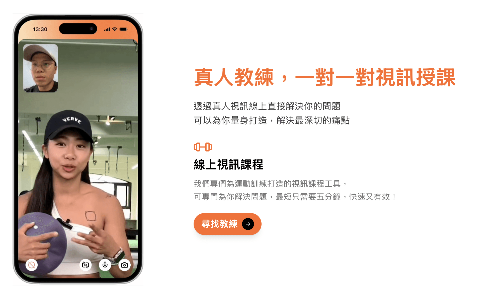
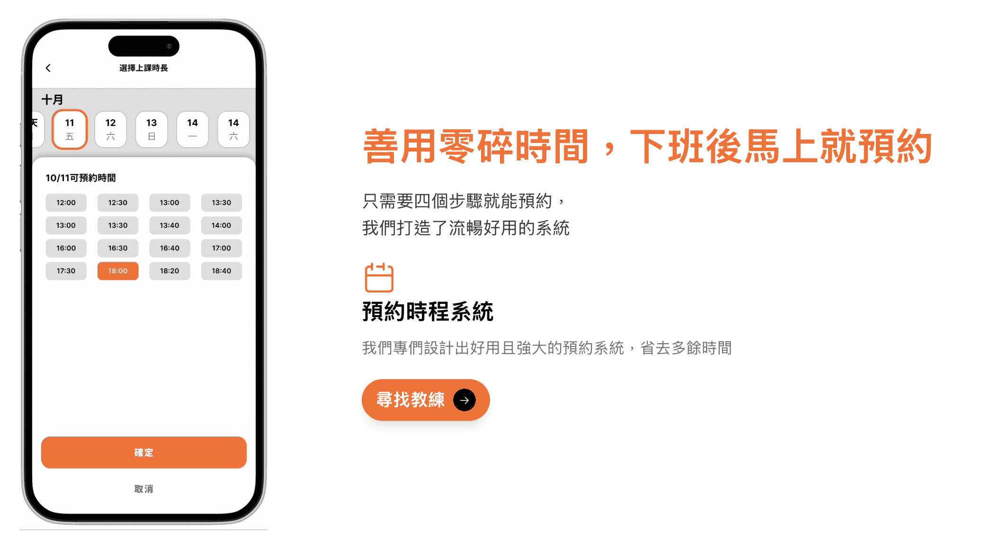
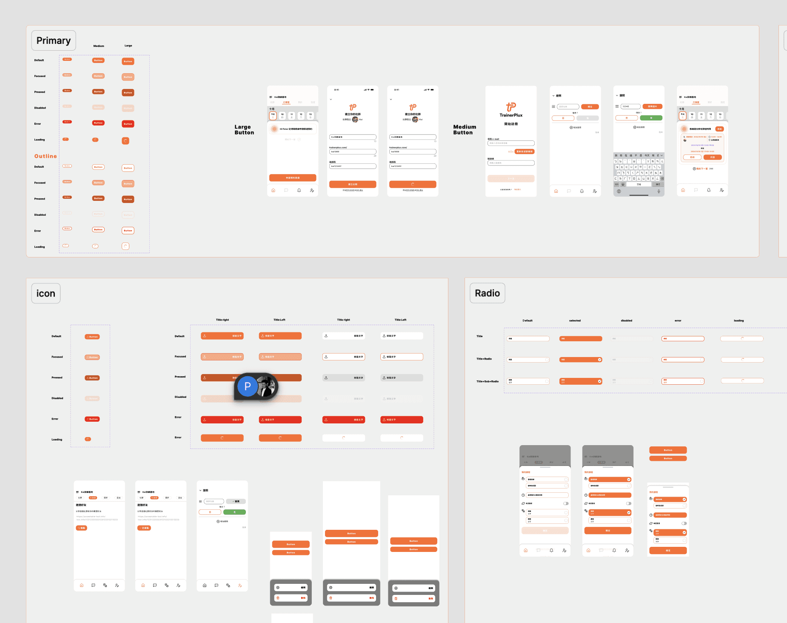
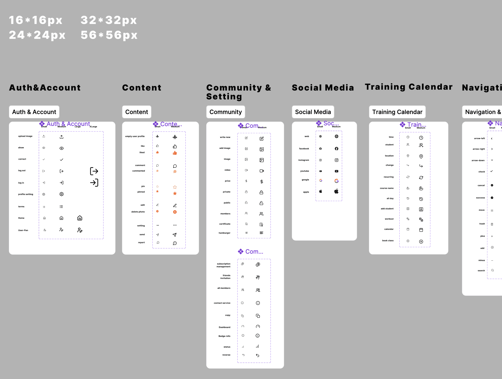
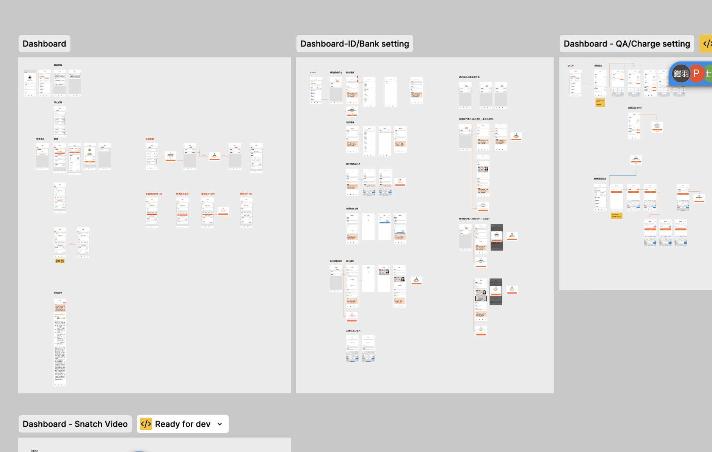